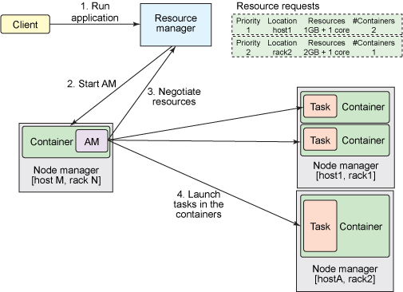

tech
Table of Contents
Mesos
用于统一管理集群的CPU、内存等资源。 Mesos由一个Master和多个Slave以及Framework组成，Slave为资源节点负责执行具体的task，Master会获取所有Slave的信息，从而了解整个集群的资源情况。 同时Master从Framework处获取是否有待执行的task，如果有待执行的task则将该task分配到Slave执行。
为了避免Master的单点问题，使用zookeeper对Master节点进行管理。
Hadoop
HDFS
MapReduce
HBase
HMaster
HRegion Server
Spark
Hive
工作于Hadoop之上，提供SQL-like的查询语句（HiveQL）
Pig
工作于Hadoop之上，提供SQL-like的查询语句（Pig Latin）
Kubernetes
Zookeeper
分布式服务框架，能够为分布式应用提供高性能和可靠地协调服务。
ZooKeeper集群由一组Server节点组成，这一组Server节点中存在一个角色为Leader的节点，其他节点都为Follower。 当客户端Client连接到ZooKeeper集群，并且执行写请求时，这些请求会被发送到Leader节点上，然后Leader节点上数据变更会同步到集群中其他的Follower节点。
当一个Leader节点发生故障失效时，失败故障是快速响应的，消息层负责重新选择一个Leader，继续作为协调服务集群的中心，处理客户端写请求，并将ZooKeeper协调系统的数据变更同步（广播）到其他的Follower节点。
ZooKeeper的namespace组成一个树状结构，树的节点称为ZNode。
应用程序可以通过ZooKeeper来进行状态同步、分布式应用配置管理等工作。
Borg
Cassandra
DynamoDB
YARN(Yet Another Resource Negotiator)
Hadoop集群由一个JobTracker和多个TaskTracker组成。在大型集群中，JobTracker出现瓶颈导致无法充分利用集群的计算资源。
YARN的解决方法是将JobTracker的职责的一部分分配给TaskTracker，从而减小JobTracker的压力。
YARN使用一个ResourceManager来管理集群资源，协调应用之间的资源争用。 在用户提交一个应用程序时，一个称为 ApplicationMaster 的轻量型进程实例会启动来协调应用程序内的所有任务的执行（这个职责以前是由JobTracker负责）。ApplicationMaster在受NodeManager控制的资源容器中运行。 NodeManager与之前的TaskTracker类似，拥有动态创建的资源容器（运算资源的实际拥有者）。
客户端向YARN提交一个任务的处理流程
